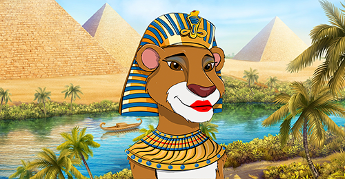
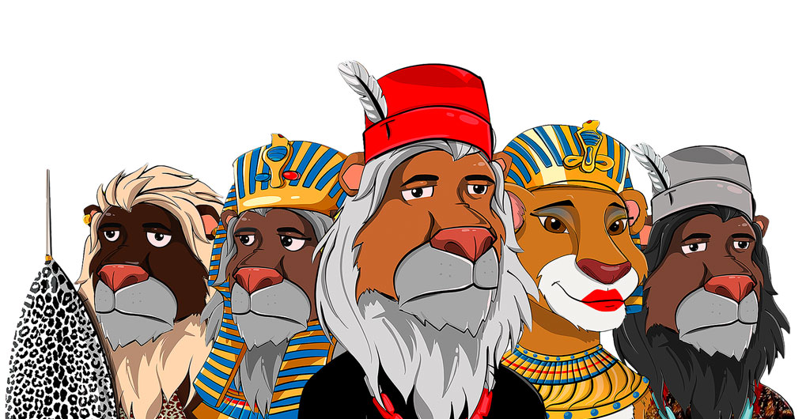
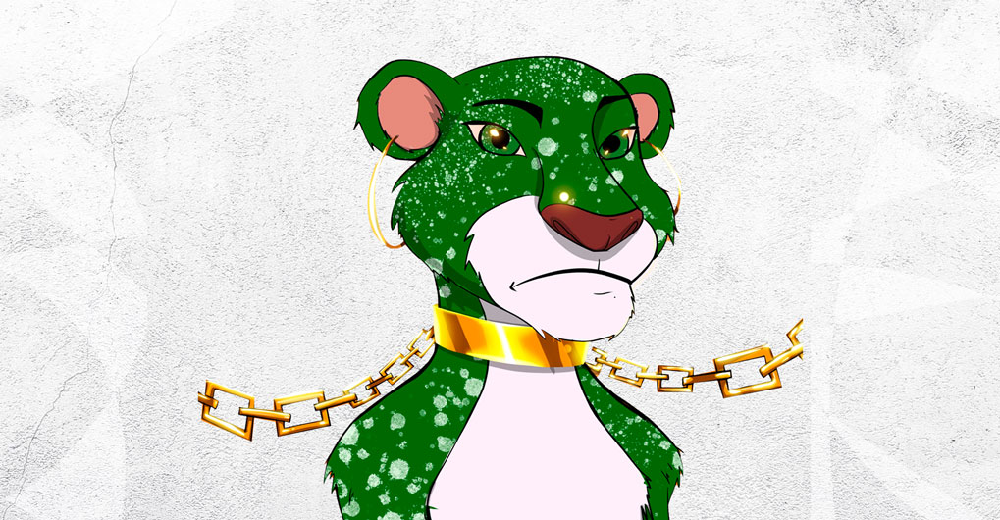
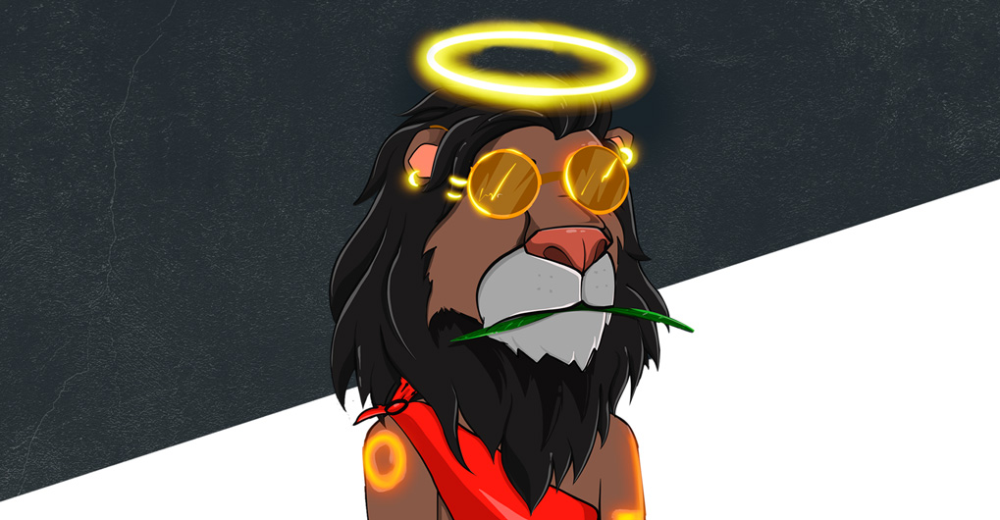

Join this ultra-exclusive NFT project featuring not only authentic art, but unmatched utility!
View All ProjectsOur tradition is what makes us what we are, our cultural practices made us unique. We believe our culture should be preserved and not altered in any way and beliefs should be passed to younger generations.
We can do this through digital arts because we all know that art is in expression or application of human creative skills and imagination. Most times, it is usually expressed in visual forms such as painting, sculpture and many more. And these artworks are to be appreciated for their beauty or emotional power which can be used to tell stories.
Every pride needs a king and every clan needs a leader. Since the beginning of time, tradition is what makes us who we are. It’s what gives us our identity and in several ways, our cultural practices make us unique. Just like Lions are fearless and powerful, we represent our identities and culture as strong kings with power and strength while expressing several african style through digital arts as we advance to the futuretLION OF AFRICA NFT is a unique collection of 1,000 hand drawn NFT’s that lives in the ethereum blockchain. Each NFT representing the pride and heritage of vast African cultures. Join us in building a worthy clan that brings forth worthy leaders into the digitally inclined world. We are the lions in a brave new world. The rebirth is here, regain your pride.
Welcome to the Clan!